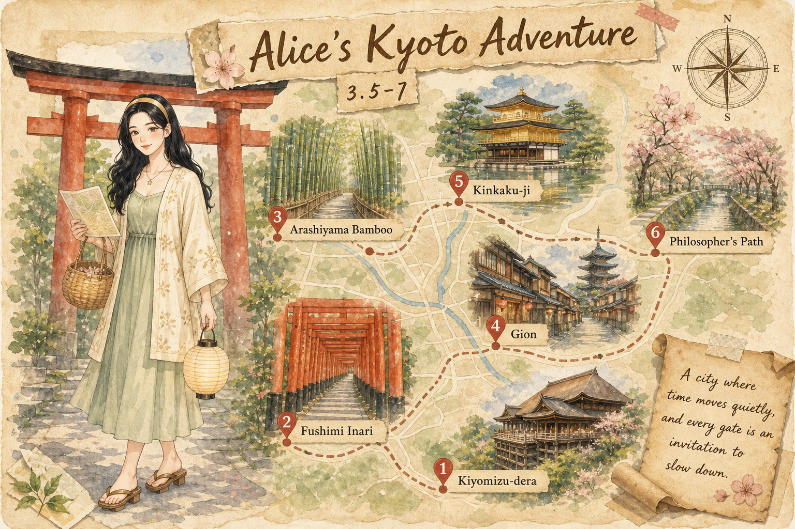
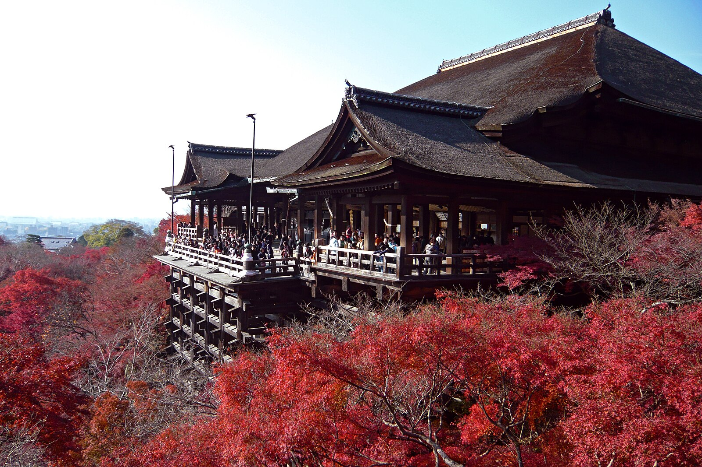
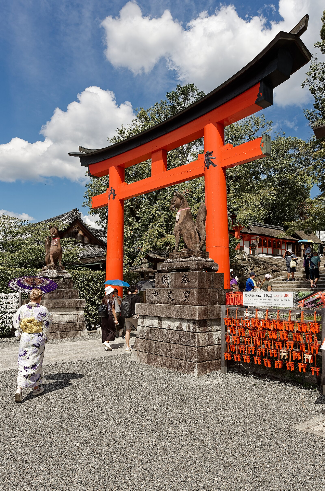
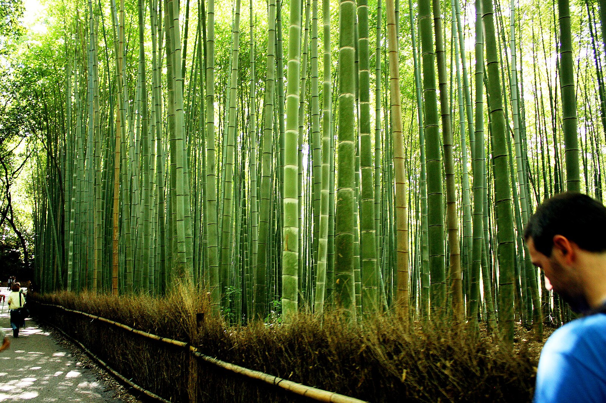

京都Kyoto
World-1000 · 旧木门与寺院之间
World-1000 · 旧木门与寺院之间

慢下来，才能听见旧城木门开合的声音。
794 年，京都成为平安京首都，一直到 1868 年明治迁都。整整一千多年，它都是日本政治与文化的中心。
这段漫长时间里，寺社、町屋、庭园与手工艺一层层叠进街道，让整座城像一本被翻旧但仍舍不得合上的书。
京都的街道像被木与纸轻轻包着。町屋的格子窗、寺院屋檐的弧度、庭园里耙过的白砂，都在把光线变得柔和。
四季是这里真正的导演。春樱让桥变粉，夏绿把竹林灌满，秋枫点燃山坡，冬雪落在金阁寺的屋顶上。
京都很多小店讲究“低音量服务”，安静不是冷淡，而是一种尊重他人节奏的城市礼貌。
在祗园，你也许会听见木屐敲在石板上清脆的声响。当地人把这种恰到好处的克制叫做“京美人”的余韵。
今天我特意把脚步放得很慢。京都的声音很轻，木门开合、竹帚扫过石阶、远处寺院的钟声，像一层薄雾罩在街道上。
我在清水寺的舞台上站了一会儿，风从木柱间穿过去，整座城市的轮廓在眼前摊开。一位穿藏青色和服的老奶奶从我身边走过，木屐敲出清脆的节奏，又很快消失在巷子里。
我忽然觉得，京都的好不在于你去了多少地方，而在于你愿不愿意让时间在这里失去刻度。
慢下来，才能听见旧城木门开合的声音。


